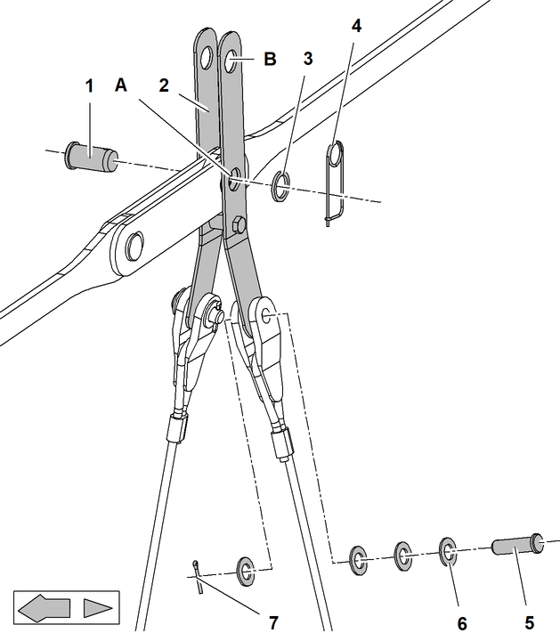

Zwischenabspannungen einbauen (Nadelausleger 0806)
Die Längen der Seile der Zwischenabspannungen und deren Einbaupositionen sind in den systemrelevanten Angaben des Auslegers angeführt.

GEFAHR
Unsachgemäßer Einbau der Zwischenabspannungen!
Versagen der Struktur.
Zwischenabspannungen laut systemrelevanten Angaben einbauen. |
Sicherungsfedern und Scheiben beidseitig von Doppelkonusbolzen der Auslegerverbolzung entfernen. |
Vorgang auf gegenüberliegender Seite wiederholen. |
Innere und äußere Gabel 2 + 3 auf Doppelkonusbolzen aufsetzen. |
Innere und äußere Gabel 2 + 3 mit Sicherungsfedern 1 sichern. |
Vorgang auf gegenüberliegender Seite wiederholen. |
Seil 2 und Scheiben 1 mit Gabel der Zwischenabspannung verbolzen. |
Bolzen 3 einsetzen. |
Vorgang auf gegenüberliegender Seite wiederholen. |

Fig. 5101: Seile der Zwischenabspannung und Koppellasche der Zwischenabspannung mit Haltestange verbolzen
Nadelauslegerlänge | Verbolzungspunkt |
|---|---|
17 m 56 ft | A |
20 m 66 ft | A |
23 m 75 ft | B |
26 m 85 ft | B |
29 m 95 ft | B |
32 m 105 ft | A |
Verbolzungspunkt der Zwischenabspannung in Abhängigkeit der Nadelauslegerlänge
Koppellaschen 2 mit Haltestange verbolzen. |
Bolzen 1 mit Scheibe 3 und Sicherungsfeder 4 sichern. |
Seile der Zwischenabspannung mit Koppellaschen 2 verbolzen. |
Bolzen 5 mit Scheiben 6 und Splint 7 sichern. |